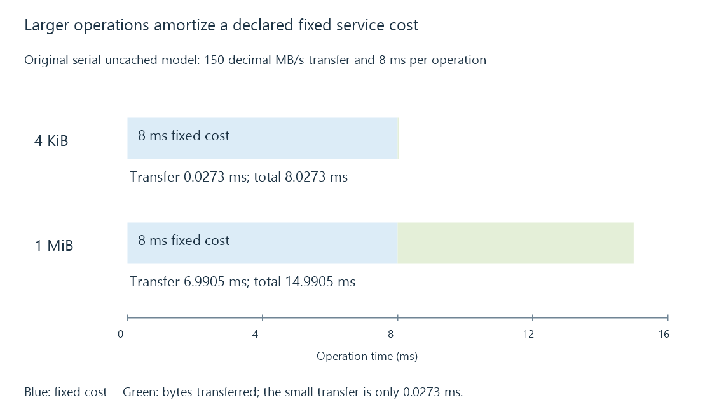

Sequential and random I/O in media workloads
Sequential and random I/O describe the order and size of storage requests, which can affect media reads and library work very differently.
Sequential I/O accesses successive ranges. Random I/O accesses ranges that are scattered relative to the preceding requests. These descriptions apply to an observed request stream: a file can be large while the application accesses it randomly, and many small files can sometimes be serviced efficiently from cache.
Playback often reads forward through a media file. Seeking moves to another range. Scanning and artwork access produce a mixture of directory, metadata and content operations.
Same device, different cost per useful byte
Consider two original uncached workloads. Assume a device transfers data at 150 decimal MB/s, and every scattered operation adds 8 ms of positioning or other service delay. There is one operation at a time.
4 KiB operation:
transfer = 4,096 ÷ 150,000,000 seconds = 0.0273 ms
total = 8 + 0.0273 = 8.0273 ms
useful rate ≈ 0.510 MB/s
1 MiB operation with the same added delay:
transfer = 1,048,576 ÷ 150,000,000 seconds = 6.9905 ms
total = 8 + 6.9905 = 14.9905 ms
useful rate ≈ 69.949 MB/s
The device's assumed transfer rate did not change. Larger operations amortized the fixed delay over more bytes. Long adjacent runs can reduce repeated positioning further. These figures describe a deliberately simplified model, not a representative HDD or SSD benchmark.

Why IOPS needs an operation size
IOPS means input/output operations per second. Multiplying by the average bytes per operation gives a useful-data rate only for the workload being described.
| Operation rate | Operation size | Data rate |
|---|---|---|
| 1,000 IOPS | 4 KiB | 4.096 decimal MB/s |
| 1,000 IOPS | 1 MiB | 1,048.576 decimal MB/s |
The equal operation counts do not imply equal work. Read/write mix, queue depth, caching and whether operations are dependent also belong in a meaningful comparison.
Individually sequential, collectively mixed
Four players can each read sequentially while the device alternates among four files. On an HDD, this may require head movement. Read-ahead can gather larger ranges and the operating system can combine or reorder requests, so the physical device may see a different pattern from the application's calls.
This is why a single large-file copy is incomplete evidence for an Emby server's mixed workload. If a film reads smoothly alone and slows during a scan, the relevant change may be the ordering and latency of requests, rather than a lack of average byte-rate capacity.
See Also
- Hard disk drives: rotation, positioning and media workloads
- Solid-state drives: flash access, writes and endurance
- Storage latency: waiting for individual operations
- Library scanning and catalogue reconciliation